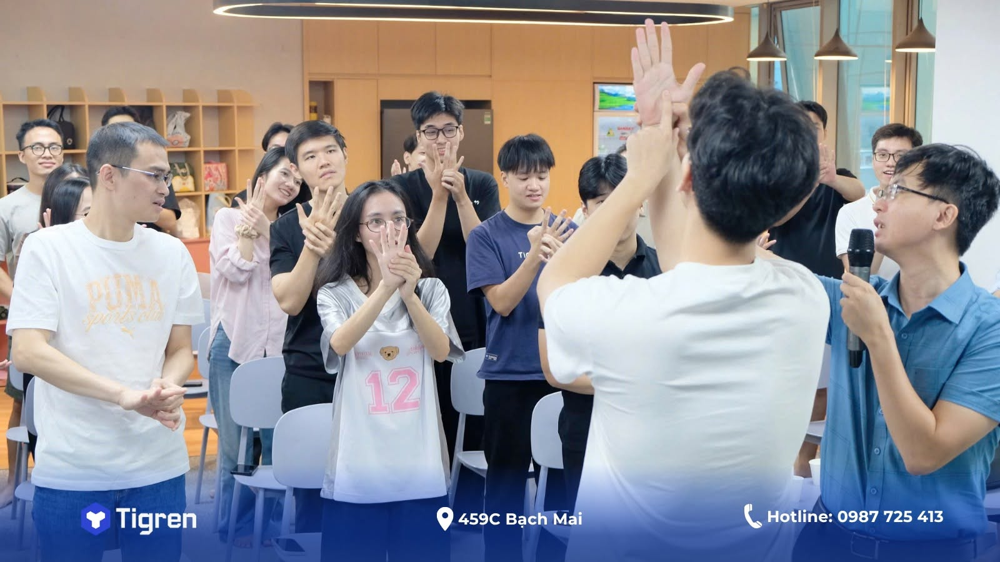
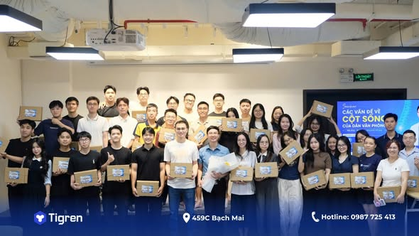

Nhân dịp Ngày Gia đình Việt Nam 28/6, mình có cơ hội tham gia một buổi seminar/talkshow về sức khỏe cột sống dành cho anh em văn phòng tại Công ty Tigren. Ban đầu, mình nghĩ đây sẽ là một buổi chia sẻ chuyên môn khá quen thuộc, xoay quanh những kiến thức về đau cổ vai gáy hay đau thắt lưng — những vấn đề mà mình gặp hằng ngày trong công việc khám chữa bệnh. Nhưng thực tế lại thú vị hơn rất nhiều.
Những câu hỏi đến ngay từ phút đầu
Ngay từ những phút đầu tiên, không khí đã trở nên sôi nổi bởi hàng loạt câu hỏi được đặt ra. Có người thắc mắc ngồi làm việc bao lâu thì nên đứng dậy vận động. Có người hỏi đau lưng có nên tiếp tục tập gym hay không. Và tất nhiên, không thể thiếu câu hỏi kinh điển mà mình gần như nghe mỗi ngày ở phòng khám: “Bác sĩ ơi, em chưa đến 30 tuổi mà sao cổ cứ kêu răng rắc suốt thế này?”.
Câu chuyện phía sau mỗi câu hỏi
Điều khiến mình ấn tượng không hẳn là những câu hỏi chuyên môn, mà là những câu chuyện phía sau chúng. Mỗi người đều mang theo một hoàn cảnh riêng. Có người thường xuyên tăng ca đến tối muộn. Có người dành phần lớn thời gian trong ngày trước màn hình máy tính. Có người bận rộn đến mức quên cả việc uống nước hay đứng dậy đi lại.
Những cơn đau cổ vai gáy, đau thắt lưng mà chúng ta vẫn thường nghĩ đơn thuần là vấn đề cơ xương khớp, đôi khi lại phản ánh cả áp lực công việc, thói quen sinh hoạt và sự thiếu quan tâm dành cho chính bản thân mình.

Đau rồi mới đi khám
Làm việc trong lĩnh vực y tế, mình nhận ra rằng nhiều người vẫn có thói quen chỉ tìm cách chăm sóc sức khỏe khi cơ thể bắt đầu lên tiếng. Đau rồi mới đi khám. Mỏi rồi mới tìm cách tập luyện. Trong khi đó, phần lớn các vấn đề về cột sống ở dân văn phòng lại hoàn toàn có thể được phòng ngừa bằng những thay đổi rất nhỏ trong cuộc sống hằng ngày.
Chỉ cần đứng dậy vận động vài phút sau mỗi giờ làm việc. Chỉ cần dành thời gian tập thể dục đều đặn mỗi tuần. Chỉ cần ngủ sớm hơn một chút và hạn chế mang công việc lên giường ngủ. Những điều tưởng chừng đơn giản ấy lại chính là những “liều thuốc” hiệu quả nhất để bảo vệ sức khỏe cột sống về lâu dài.
Chia sẻ kiến thức không nhất thiết phải ở phòng khám
Buổi talkshow cũng nhắc mình nhớ rằng việc chia sẻ kiến thức y khoa không nhất thiết phải diễn ra trong phòng khám hay hội trường chuyên ngành. Đôi khi, một cuộc trò chuyện gần gũi giữa những người làm chuyên môn và những người đang trực tiếp đối mặt với các vấn đề sức khỏe hằng ngày lại mang đến nhiều giá trị hơn. Mình được chia sẻ những điều mình biết, nhưng đồng thời cũng học được rất nhiều từ những câu hỏi thực tế và những trải nghiệm mà mọi người mang đến.
Cảm ơn và một lời nhắn
Xin cảm ơn Công ty Tigren đã tạo điều kiện để mình có một buổi chiều vừa được chia sẻ chuyên môn, vừa được lắng nghe và kết nối với mọi người. Hy vọng rằng sau buổi trò chuyện hôm ấy, sẽ có thêm nhiều người nhớ đứng dậy đi lấy một cốc nước, dành vài phút vận động, tự chăm sóc cơ thể mình tốt hơn thay vì cố ngồi thêm vài dòng code, vài bảng báo cáo hay vài email nữa rồi mới nghỉ.

Sức khỏe cột sống không được xây dựng trong một ngày. Nó được tạo nên từ những thói quen rất nhỏ, lặp lại mỗi ngày. Và đôi khi, chỉ cần một lần đứng dậy đúng lúc cũng có thể là khởi đầu của một thay đổi tích cực.